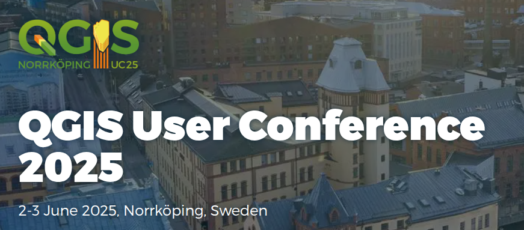
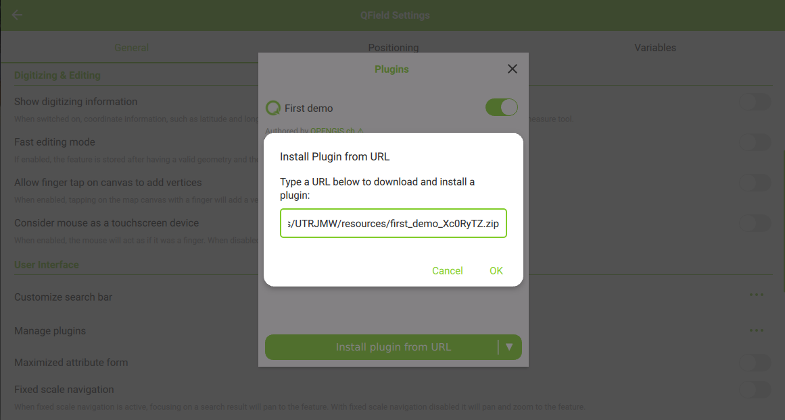
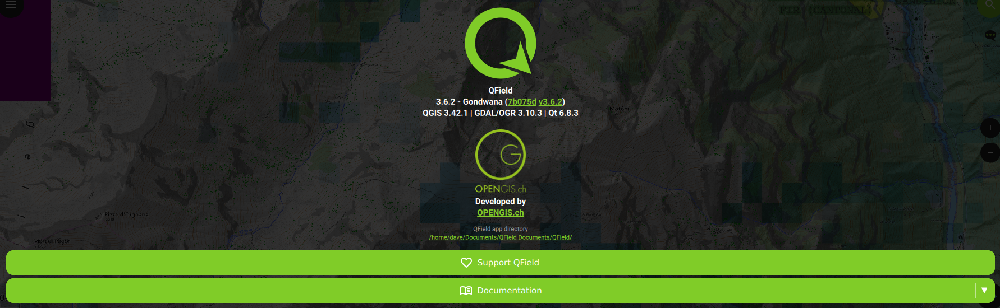
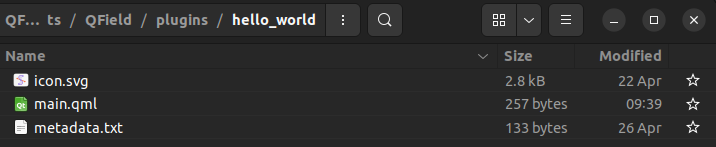
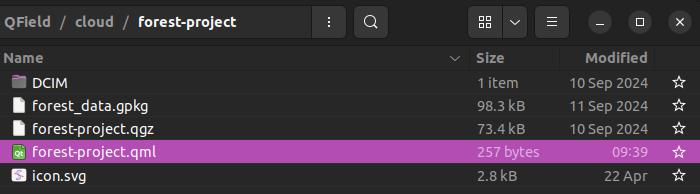

QField Plugins workshop
QGIS User Conference 2025 - Norrköping, Sweden
Who we are

Who you are

AGENDA
- Why plugins for QField?
- Types of QField plugins
- Intro to QML
- Developing QField plugins
- Implementing the Weather Forecast plugin!
- Plugin showcase
- Resources
Why plugins for QField?
- Address clients specific needs
- Keeping the UX simple
- QField is your tool
Types of QField Plugins
| PROJECT PLUGINS | APPLICATION PLUGINS |
|---|---|
| Shared alongside QField project | Shared via URL (ZIP file) |
| Single plugin | Multiple plugins |
| Installation not required | Required installation |
| Lasts project session | Lasts QField session |
Intro to QML
Why QML
- Qt Modeling Language, declarative, design-oriented
- Elements (aka types)
- Attributes: Properties, Signals, Handlers and Methods
../Elements (aka value types)
Item, Rectangle, Text, TextInput, MouseArea, Dialog, ...
Text {
[...]
}
../Elements (aka value types)
Item, Rectangle, Text, TextInput, MouseArea, Dialog, ...
Rectangle {
[...]
Text {
[...]
}
}
../Elements (aka value types)
Item, Rectangle, Text, TextInput, MouseArea, Dialog, ...
Item {
[...]
Text {
[...]
}
}
../Attributes
Properties, Signals, Handlers and Methods
Rectangle {
...
MouseArea {
id: myArea
...
}
}
../Attributes
Properties, Signals, Handlers and Methods
Rectangle {
color: "green"
MouseArea {
anchors.fill: parent
}
}
../Attributes
Properties, Signals, Handlers and Methods
Rectangle {
color: "green"
MouseArea {
anchors.fill: parent
onClicked: ...
}
}
../Attributes
Properties, Signals, Handlers and Methods
Rectangle {
color: "green"
MouseArea {
anchors.fill: parent
onClicked: parent.color = "red"
}
}
../Attributes
Properties, Signals, Handlers and Methods
Rectangle {
color: "green"
MouseArea {
anchors.fill: parent
onClicked: { parent.color = "red" }
}
}
../Attributes
Properties, Signals, Handlers and Methods
Rectangle {
color: "green"
MouseArea {
anchors.fill: parent
onClicked: myCustomMethod()
function myCustomMethod() {
parent.color = "red"
}
}
}
../Attributes
Properties, Signals, Handlers and Methods
Rectangle {
color: theColor
property var theColor: "green"
MouseArea {
anchors.fill: parent
onClicked: {
parent.theColor = "red"
}
}
}
../Attributes
Properties, Signals, Handlers and Methods
Rectangle {
color: theColor
property var theColor: "green"
MouseArea {
anchors.fill: parent
onClicked: {
if (theColor == "green") {
theColor = "red"
} else {
theColor = "green"
}
}
}
}
../Attributes
Properties, Signals, Handlers and Methods
Rectangle {
color: isGreen ? "red" : "green"
property bool isGreen: true
MouseArea {
anchors.fill: parent
onClicked: {
isGreen = !isGreen
}
}
}
../Attributes
Properties, Signals, Handlers and Methods
Rectangle {
color: "green"
MouseArea {
anchors.fill: parent
onClicked: { parent.color = "red" }
}
}
../Attributes
Properties, Signals, Handlers and Methods
Rectangle {
color: "green"
signal colorChanged(info: string)
MouseArea {
anchors.fill: parent
onClicked: {
parent.color = "red"
parent.colorChanged("by in the mouse area")
}
}
onColorChanged: {
console.log("Color changed to:", parent.color, " info:", info)
}
}
Resources
- QML Docu https://doc.qt.io/qt-6/qtquick-index.html
- QML Reference: https://doc.qt.io/qt-6/qmlreference.html
- QML Tutorial: https://doc.qt.io/qt-6/qml-tutorial.html
- Introduction to Qt/QML, by KDAB: YouTube Playlist
Hello world (QML)
../Check it out
import QtQuick 2.0
Text {
text: "Hello world!"
}
or here https://qmlweb.github.io
../Exercise online
-
Go to: https://qmlweb.github.io
-
Modify it to change the text color on clicking on it.
-
… and optionally to change the color back with another click
Break ☕
Developing QField plugins
../QField GUI
Dashboard | Main menu | Search bar | Plugins toolbar | Positioning | Canvas actions

../QField GUI
Dashboard | Main menu | Search bar | Plugins toolbar | Positioning | Canvas actions

../QField GUI
Dashboard | Main menu | Search bar | Plugins toolbar | Positioning | Canvas actions

../QField GUI
Dashboard | Main menu | Search bar | Plugins toolbar | Positioning | Canvas actions

../QField GUI
Dashboard | Main menu | Search bar | Plugins toolbar | Positioning | Canvas actions

../QField GUI
Dashboard | Main menu | Search bar | Plugins toolbar | Positioning | Canvas actions

../QField API
Root objects | iface | Theme | QField GUI types | QGIS | Utils
iface
qgisProject
settings
clipboardManager
...
See qgismobileapp.cpp for details.
../QField API
Root objects | iface | Theme | QField GUI types | QGIS | Utils
iface.mainWindow()
iface.mapCanvas()
iface.findItemByObjectName("...")
iface.logMessage("...")
iface.addItemToPluginsToolbar()
iface.addItemToMainMenuActionsToolbar()
iface.addItemToCanvasActionsToolbar()
See appinterface.h for details.
../QField API
Root objects | iface | Theme | QField GUI types | QGIS | Utils
Theme.mainColor // #80cc28
Theme.mainTextColor
Theme.mainBackgroundColor
Theme.darkGray
Theme.defaultFont
Theme.getThemeVectorIcon("...")
See Theme.qml for details.
../QField API
Root objects | iface | Theme | QField GUI types | QGIS | Utils
QfButton
QfToolButton
QfTextField
QfSwitch
QfComboBox
...
See src/qml/imports/Theme/* for details.
../QField API
Root objects | iface | Theme | QField GUI types | QGIS | QGIS | Utils
QgsFeature
QgsGeometry
QgsAttributes
QgsPointXY
QgsField
...
See qgismobileapp.cpp::initDeclarative for details.
../QField API
Root objects | iface | Theme | QField GUI types | Utils
LayerUtils
GeometryUtils
FeatureUtils
CoordinateReferenceSystemUtils
SnappingUtils
...
See src/core/utils/* for details.
../Plugin Location
Application Plugins
- Install Plugins via QField Settings > Manage Plugins

../Plugin Location
Application Plugins
- Find location in “About QField”

- Folder structure

../Plugin Location
Project Plugins
- Copy to project folder
- Name the main-file like the project qgz

../Install “First Demo”
- Get the link on the Schedule…
- Install “First Demo” via QField Settings > Manage Plugins
../Install “First Demo”
Check out the main.qml in the plugin directory.
import QtQuick
Item {
Component.onCompleted: {
iface.mainWindow().displayToast('First demo!')
}
}
../Debugging
-
Popup on application display
mainWindow.displayToast("") -
Log message in the log panel
iface.logMessage("") -
Console output (not visible in QField)
console.log("")
../Let’s play
All the world is green
Rectangle{
id: myRectangle
parent: iface.mapCanvas()
anchors.fill: parent
color: '#5000ff00'
}
../Let’s play
Template Plugin
Break ☕
Weather Forecast plugin
Let’s create a forecast plugin!
../What we need
- Button to fetch a weather forecast (reuse the edited template plugin)
- Show an info dialog (reuse the edited template plugin)
- Our location (reuse the edited template plugin)
- API call
XmlHttpRequestto do an API call and fetch the forecast from open-meteo.com
- Whatever we want
../What we do
- Check out open-meteo.com
- Get snippets at pad.opengis.ch (or the slides below)
- We test the Java Script at https://runjs.app/play
- We map the weather code to description and image
- We integrate it into our template plugin
../API Request snippet
The Java Script for using XmlHttpRequest
//Norrköping
lat = 58.5833;
lon = 16.1833;
let request = new XMLHttpRequest();
request.onreadystatechange = function() {
if (request.readyState === XMLHttpRequest.DONE) {
console.log(request.response)
}
}
request.open("GET", "https://api.open-meteo.com/v1/forecast?latitude=" + lat + "&longitude=" + lon + "&daily=weather_code,temperature_2m_max&timezone=auto");
request.send();
../Code Mapping
{
"0": {
"description": "Sunny",
"image": "http: //openweathermap.org/img/wn/01d@2x.png"
},
"1": {
"description": "Mainly Sunny",
"image": "http://openweathermap.org/img/wn/01d@2x.png"
},
[...]
};Plugin showcase

Plugin showcase
Snap!

Plugin showcase
Nominatim locator plugin

Plugin showcase
LiveField plugin
Resources
QML Docu https://doc.qt.io/qt-6/qtquick-index.html
QML Reference: https://doc.qt.io/qt-6/qmlreference.html
QML Tutorial: https://doc.qt.io/qt-6/qml-tutorial.html
Introduction to Qt/QML, by KDAB (YouTube Playlist)
QML online editor: https://qmlweb.github.io
QML advanced online editor: https://patrickelectric.work/qmlonline/
QField plugins: https://github.com/topics/qfield-plugin
Plugin icons: https://fonts.google.com/icons
JavaScript online editor: https://runjs.app/play

Thanks, and happy coding!